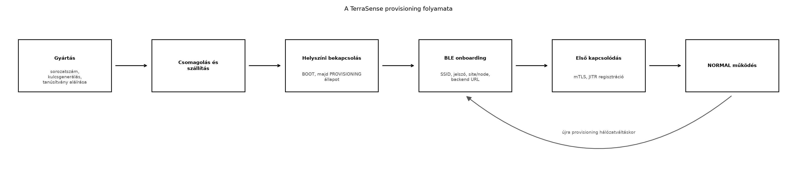

A TerraSense üvegház-telepítés során több tucat vagy akár több száz
ts-node kerül ki a helyszínekre. Mindegyiknek egyedi
azonosítóval, saját tanúsítvánnyal és a helyi hálózatra érvényes
konfigurációval kell rendelkeznie, mielőtt az első telemetriai üzenetet
elküldheti. Ha a gyártósoron minden eszközbe ugyanazt a privát kulcsot
és tanúsítványt írnánk, egyetlen eszköz kompromittálódása az egész
flottát veszélyeztetné. Ha viszont minden eszközt kézzel regisztrálnánk
a backendben, az üzembe helyezés lassú, hibás és drága lenne. A
provisioning és az onboarding éppen ezt a két problémát oldja meg:
automatizálja az identitás kiadását, és a helyszíni beállítást
biztonságos, de kezelhető folyamattá teszi.
Definíció. A provisioning az a folyamat, amelynek során az eszköz megkapja az egyedi identitását (sorozatszám, kulcs, tanúsítvány), valamint a kezdeti biztonsági és konfigurációs anyagokat. Az onboarding ennek a helyszíni, jellemzően a hálózati csatlakozást és a felügyeleti rendszerbe való bevezetést magában foglaló része. A zero-touch provisioning (ZTP) olyan automatizált folyamat, amely minimális emberi beavatkozással juttatja el az eszközt a gyártótól a működő állapotig. A just-in-time regisztráció (JITR) pedig olyan backend-oldali mechanizmus, amely az eszköz első, hiteles kapcsolódásakor automatikusan hozza létre az eszköznyilvántartási rekordot.
A gyártósor a ts-node minden egyes példányához
hozzárendel egy monoton növekvő sorozatszámot, például
TS-0001. A kritikus lépés a kulcspár generálása: ezt
lehetőség szerint közvetlenül az eszközön, egy biztonságos elemben
(secure element) kell végrehajtani, hogy a privát kulcs soha ne hagyja
el a hardvert. Ha a gyártósor egyszerűbb, szoftveres kulcsgenerálást
használ, a privát kulcsot a gyártás során, védett környezetben írják a
flash-be. A publikus kulcsból tanúsítvány-kérelmet (CSR) készítenek,
amelyet a gyártó vagy a megrendelő CA-ja ír alá. Az így kapott X.509
tanúsítvány tartalmazza a sorozatszámot (például a CN mezőben), a
szervezetet, és opcionálisan SAN-mezőben az eszköz URI-ját. A
tanúsítvány láncot és a CA tanúsítványt is eltárolják az eszközön.
A telepítő szakember a helyszínen bekapcsolja a
ts-node-ot. Az eszköz a BOOT állapot után –
amelyet az Eszközszoftver-architektúra: rétegek és
állapotgépek alfejezetben definiáltunk – észleli, hogy a
provisioned flag nem igaz, ezért a
PROVISIONING állapotba lép. Itt a rádió BLE perifériaként
hirdet, például TS-PROV-<sorozatszám> néven. A
telepítő egy laptopon vagy mobilon futó ts-provision
CLI-vel csatlakozik, és megadja a Wi-Fi SSID-t, a jelszót, a site és
node azonosítókat, valamint a backend MQTT/TLS végpontját. A
BLE-kapcsolatot párosítással (pairing) és titkosítással kell védeni,
hogy a hálózati hitelesítő adatok ne szivárogjanak. A
ts-node a kapott adatokat a Zephyr settings/NVS rétegében
tárolja, beállítja a provisioned flaget, majd újraindulva a
NORMAL állapotba lép, és megpróbál csatlakozni a
Wi-Fi-hez.
A backend az eszközöket egy nyilvántartásban tartja, amelyben minden rekord tartalmazza legalább a sorozatszámot, a site/node azonosítókat, a tanúsítvány ujjlenyomatát és a regisztráció állapotát. Kézi onboarding esetén a rendszergazda előre felveszi az eszközöket. JITR esetén a backend az első TLS-kézfogás során kapott tanúsítványt ellenőrzi a gyártói CA-val, majd ha érvényes, automatikusan létrehozza a rekordot. Ez gyors, de csak akkor biztonságos, ha a CA privát kulcsa megfelelően védett; különben bárki regisztrálhat hamis eszközt.
A Matter okosotthon-szabvány (korábbi nevén Project CHIP) hasonló onboarding-jellegű mechanizmust definiál: a készülék egy beállítási kódot (setup code) és QR-kódot tartalmaz, BLE-n vagy hálózaton keresztül fogadja a hálózati hitelesítő adatokat, majd IP-alapú szolgáltatásokkal regisztrálja magát a Matter-ökoszisztémában. A TerraSense-ben saját, egyszerűbb folyamatot használunk, de a koncepció analóg. A Matter specifikus lépései és az aktuális verziók ellenőrzési igényűek.

A folyamat azért kapcsolódik szorosan az életciklus-állapotgéphez,
mert a PROVISIONING állapot csak akkor aktív, ha a
provisioned flag hamis, vagy ha a felhasználó explicit
módon gyári visszaállítást kér. Új hálózatra költözéskor a technikus
törli a beállított konfigurációt, így az eszköz újra a
PROVISIONING állapotba kerül.
A választás alapvetően a flotta méretétől, a telepítői szakértelemtől és a biztonsági követelményektől függ.
| Szempont | Zero-touch (ZTP) | Kézi onboarding (pl. BLE CLI) |
|---|---|---|
| Emberi beavatkozás | minimális, gyakran csak áram alá helyezés | minden eszköznél szükséges |
| Hálózati hitelesítő adás | előre telepített, gyártósori vagy hálózati bootstrap | technikus adja meg |
| Biztonsági kockázat | a gyártósori konfiguráció és a bootstrap csatorna védelme kritikus | a BLE párosítás és a technikus képzése a kulcs |
| Költség gyártásban | magasabb (biztonságos elem, tesztelés) | alacsonyabb |
| Költség üzembe helyezésben | alacsony | magas, hibalehetőséggel |
| Alkalmazási példa | nagy távközlési vagy energiaszolgáltatói flotta | egyedi üvegházak, kis telephelyek |
A TerraSense mintarendszerben a kézi BLE onboarding mellett döntöttünk, mert a célkörnyezet kis flotta, ahol a telepítő szakember jelen van, és a gyártósori automatikus konfiguráció aránytalanul drága lenne. A JITR-t viszont bekapcsoljuk, mert így nem kell minden eszközt előre kézzel regisztrálni a backendben.
A következő labor azt mutatja be, hogyan néz ki a TerraSense
provisioning a gyakorlatban. Mivel a native_sim
környezetben valódi BLE nincs, a BLE-s onboarding üzenetváltást egy
Python CLI szimulálja: a technikus „csatlakoztatja” az eszközt, átadja a
konfigurációt, a script pedig elvégzi a tanúsítványgenerálást és a
backend JITR regisztrációját. Valós hardveren ugyanez a config a BLE
GATT íráson keresztül érkezne meg a Zephyr settings-be.
Munkakönyvtár: ~/iot-labor/i059
mkdir -p ~/iot-labor/i059/devices ~/iot-labor/i059/ca
cd ~/iot-labor/i059
# Labor-CA létrehozása, ha az i056-ból még nem áll rendelkezésre
openssl ecparam -genkey -name prime256v1 -out ca/ca.key
openssl req -x509 -new -key ca/ca.key -sha256 -days 3650 \
-subj "/C=HU/O=TerraSense Lab/CN=TerraSense Lab CA" -out ca/ca.crtHozzuk létre a provisioning scriptet
provision_ts_node.py néven:
#!/usr/bin/env python3
import argparse, json, subprocess, pathlib, sys, datetime, hashlib
def run(cmd):
subprocess.run(cmd, check=True)
def main():
p = argparse.ArgumentParser(description="TerraSense ts-node provisioning")
p.add_argument("--serial", required=True)
p.add_argument("--site", required=True)
p.add_argument("--node", required=True)
p.add_argument("--ssid", required=True)
p.add_argument("--password", required=True)
p.add_argument("--backend-url", default="mqtts://broker.local:8883")
p.add_argument("--ca-dir", required=True)
args = p.parse_args()
base = pathlib.Path("devices") / args.serial
base.mkdir(parents=True, exist_ok=True)
ca_crt = pathlib.Path(args.ca_dir) / "ca.crt"
ca_key = pathlib.Path(args.ca_dir) / "ca.key"
if not ca_crt.exists() or not ca_key.exists():
sys.exit("CA fájlok nem találhatók")
# Eszközkulcs és CSR generálása, majd aláírás a labor-CA-val
run(["openssl", "ecparam", "-genkey", "-name", "prime256v1",
"-out", str(base / "device.key")])
run(["openssl", "req", "-new", "-key", str(base / "device.key"),
"-subj", f"/C=HU/O=TerraSense/CN=ts-node-{args.serial}",
"-out", str(base / "device.csr")])
run(["openssl", "x509", "-req", "-in", str(base / "device.csr"),
"-CA", str(ca_crt), "-CAkey", str(ca_key),
"-CAcreateserial", "-days", "3650",
"-out", str(base / "device.crt"), "-sha256"])
# Egyszerűsített provisioning config; valós eszközön a jelszót titkosítva tárolnánk
config = {
"serial": args.serial,
"site": args.site,
"node": args.node,
"ssid": args.ssid,
"password": args.password,
"backend_url": args.backend_url,
"provisioning_ts": datetime.datetime.now(datetime.timezone.utc).isoformat()
}
(base / "provisioning.json").write_text(json.dumps(config, indent=2))
# JITR szimuláció: tanúsítvány ellenőrzése, majd eszköznyilvántartás frissítése
run(["openssl", "verify", "-CAfile", str(ca_crt), str(base / "device.crt")])
dev_db = pathlib.Path("devices.json")
devices = {}
if dev_db.exists():
devices = json.loads(dev_db.read_text())
fingerprint = hashlib.sha256((base / "device.crt").read_bytes()).hexdigest()
devices[args.serial] = {
"serial": args.serial,
"site": args.site,
"node": args.node,
"cert_fingerprint_sha256": fingerprint,
"status": "provisioned",
"onboarded_at": datetime.datetime.now(datetime.timezone.utc).isoformat()
}
dev_db.write_text(json.dumps(devices, indent=2))
print(f"Provisioning kész: {args.serial}")
if __name__ == "__main__":
main()Futtassuk le egy ts-node példányra:
python3 provision_ts_node.py --serial TS-0001 --site gh1 --node n001 \
--ssid TerraSenseAP --password labtitok --backend-url mqtts://broker.local:8883 \
--ca-dir caVárt kimenet:
Provisioning kész: TS-0001A devices/TS-0001/ könyvtárban megjelenik a
device.key, device.csr,
device.crt és provisioning.json. A
devices.json nyilvántartásba bekerül a rekord a tanúsítvány
SHA-256 ujjlenyomatával. A tanúsítványt a openssl verify
parancs a labor-CA-val szemben ellenőrzi, ami a JITR szimulációja. A
provisioning.json tartalma a következő (a pontos időbélyeg
eltérhet):
{
"serial": "TS-0001",
"site": "gh1",
"node": "n001",
"ssid": "TerraSenseAP",
"password": "labtitok",
"backend_url": "mqtts://broker.local:8883",
"provisioning_ts": "2025-01-01T00:00:00+00:00"
}Takarítás csak a labor saját fájljaira terjedhet ki:
rm -rf ~/iot-labor/i059/devices ~/iot-labor/i059/devices.json ~/iot-labor/i059/caA sikeres provisioning után három dolgot kell ellenőrizni: a
tanúsítvány érvényes-e (a openssl verify kimenetében
OK szerepel), a devices.json tartalmazza-e az
új rekordot, és a provisioning.json site/node azonosítói
helyesek-e. Valós hardveren egy ts-node esetén a
NORMAL állapotba lépést és az MQTT
terrasense/gh1/n001/status retained üzenet megjelenését is
ellenőrizni kell.
| Tünet | Lehetséges ok | Javítás |
|---|---|---|
openssl verify hibát ad |
a CA-tanúsítvány nem egyezik, vagy a lánc hiányos | ellenőrizze a --ca-dir útvonalat és a CA-t |
| A script nem találja a CA fájlokat | rossz munkakönyvtár vagy hiányzó CA | futtassa a labor CA-létrehozó parancsát, vagy másolja az Eszközidentitás: X.509-tanúsítványok, PKI és kulcstárolás alfejezetből |
| Az eszköz nem lép NORMAL állapotba | a provisioned flag nem íródott be a settings-be |
ellenőrizze a Zephyr settings hívásokat és a flash-t |
| A JITR elutasítja az eszközt | a tanúsítvány lejárt, vagy a CN nem illeszkedik a sorozatszámhoz | frissítse a tanúsítványt, illetve javítsa a kiállítási paramétereket |
provisioning.json a laborban egyszerűsítésből tartalmazza a
Wi-Fi jelszót, de éles rendszerben ezt titkosítva, például a Zephyr
settings titkosított részében vagy egy secure elementben kell
tárolni.devices.json nyilvántartási sémáját úgy, hogy az támogassa
a flotta későbbi kezelését (például parancsok küldése, OTA-csoportok).
Milyen mezőket venne fel a mostani rekordba?provision_ts_node.py scriptet úgy, hogy ellenőrizze a
sorozatszám egyediségét, és már regisztrált sorozatszám esetén hibával
lépjen ki.ts-node nem
tud csatlakozni a backendhez, mert a JITR elutasítja. Soroljon fel
legalább három lehetséges okot, és mindegyikhez adjon diagnosztikai
lépést.devices.json rekordba például érdemes felvenni:
ota_group, firmware_version,
last_seen_ts, desired_state,
reported_state, tags. Ez lehetővé teszi a
flottakezelést (Flottakezelés: nyilvántartás,
konfiguráció, állapot) és az OTA-csoportos frissítést (OTA-frissítés: A/B képek, rollback, delta, fokozatos
kiadás).devices.json
betöltésénél meg kell vizsgálni, hogy a args.serial már
kulcsként szerepel-e. Ha igen,
sys.exit("Sorozatszám már regisztrálva"). Ez a JITR
megelőzése is: a backendnek sem szabad kétszer regisztrálnia.openssl verify, a
tanúsítvány lejárati idejének ellenőrzése, a CN kiírása, a backend logok
megtekintése.A TerraSense provisioning két szakaszból áll: a gyártás során minden
ts-node egyedi sorozatszámot (pl. TS-0001),
saját ECC-kulcspárt és a labor-CA által aláírt X.509 tanúsítványt kap. A
helyszíni onboarding BLE-kapcsolaton keresztül történik: a technikus
megadja a Wi-Fi SSID-t és jelszót, a site/node azonosítókat
(gh1, n001) és a backend MQTT/TLS URL-jét. A
ts-node ezt a Zephyr settings/NVS-ben tárolja, a
provisioned flaget beállítja, majd a NORMAL
állapotba lép. A backend JITR-t használ: az első TLS-kézfogás
tanúsítványát ellenőrzi, és automatikusan felveszi az eszközt a
devices.json nyilvántartásba. A laborfájlok:
~/iot-labor/i059/provision_ts_node.py,
~/iot-labor/i059/devices/TS-0001/ és
~/iot-labor/i059/devices.json. Továbbvitt
eredmény: ez a provisioning-folyamat, a
devices.json rekordséma és a sorozatszám-konvenció szolgál
alapul a Flottakezelés: nyilvántartás, konfiguráció,
állapot és a Záróprojekt: a teljes TerraSense
rendszer összeállítása és átvétele alfejezetekben.
A tanúsítványkezelés alapelvei az X.509 szabványból (RFC 5280) és a TLS 1.3 specifikációból származnak. A BLE onboarding koncepciója a Bluetooth SIG specifikációin alapul. A Matter onboarding-rész kifejezetten ellenőrzési igényű: a konkrét setup code formátum, a BLE-szolgáltatások UUID-jei és a hálózati bootstrap üzenetek a Connectivity Standards Alliance aktuális dokumentációjától függenek. A Zephyr settings/NVS API-k és a biztonságos elem támogatás konkrét Kconfig- és devicetree-beállításai a Zephyr aktuális kiadásának dokumentációjában ellenőrizhetők.